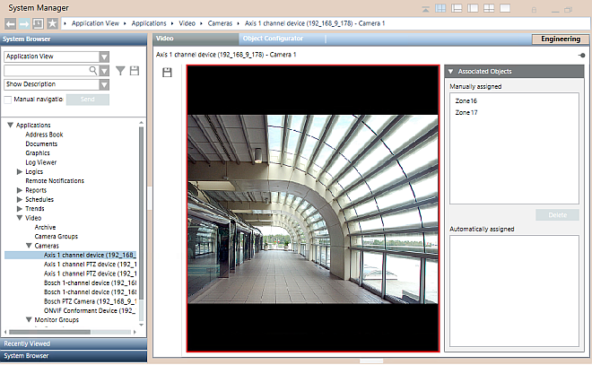
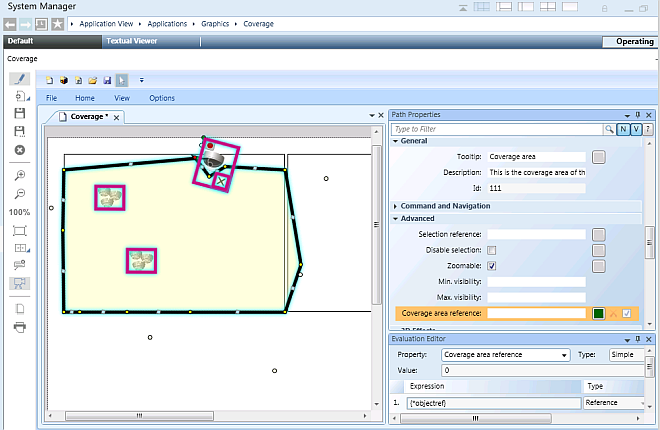

Cameras Associated to System Objects
You can configure associations of cameras to system objects, so that selecting an object makes links to its associated cameras available in the Related Items tab. Clicking the camera in Related Items will then display its images in the Secondary pane.
For instructions see Associating Cameras to System Objects and Display the Video Associated with an Object.
In addition, when that object generates an event, the camera association may enable you to automatically record the associated video images.
Manual Association
When you select a camera object under Video > Cameras, you can configure its Associated objects via drag-and-drop.

Graphical Association
You can also associate objects to a camera using the coverage area tool in the Graphics application. Use one of the camera symbols with coverage area and adjust the area drawing (a closed Path element) as required. On the cameras, graphical associations are listed in the Automatically assigned box.
For more information about how to use the coverage area in graphics, see the Graphic Editor.

Additional Automatic Associations
NOTE 1: Additional associations, for example to further investigate alarms, may be established by programmed reactions that select cameras to display video images on the monitors of the video view.
NOTE 2: The system automatically associates video objects with themselves. This association enables users, for example, to select a camera symbol in a graphic in the Primary pane, and get Related Items links to show its video images in the Secondary pane. For video-source objects, there will be links both to display the selected source (camera link) and to display its video images (show video). For non-source video objects, there will only be links to show the live video images